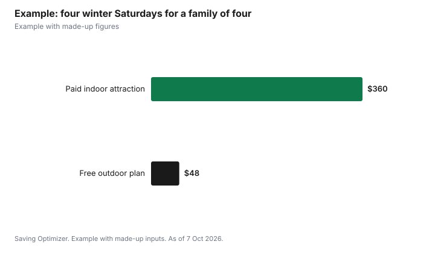

Kids · Canada
Free Winter Activities for Kids in Canada: Tobogganing, Outdoor Rinks and Other No-Cost Days Out
Most of the best winter activities for kids in Canada cost nothing to get into. City tobogganing hills are free. Outdoor rinks are free in most cities; in Toronto, all drop-in skating programs are free, and a free Skate Lending Library lends skates and helmets at outdoor rinks starting November 20, 2026. Parks Canada gives free admission to youth 17 and under all year, and many public libraries offer free passes to museums and attractions. The real cost of a free winter is gear: warm layers, a helmet and skates that fit. Borrow or buy used where you can, and in Ontario, kids' hats, mitts and scarves carry only the 5% GST portion of HST.
Key takeaways
- Tobogganing on city hills is free; Toronto recommends ski helmets and says to avoid tubes and plastic discs.
- Toronto's drop-in skating is free, at more than 50 outdoor rink locations in a typical season.
- Toronto's Skate Lending Library lends free skates and helmets, starting Nov 20, 2026.
- Parks Canada admission is free for youth 17 and under.
- Library attraction passes can cover museum trips for free.
- Worked example uses made-up figures.
Tobogganing: free, but follow the hill rules
Most Canadian cities list public tobogganing hills on their parks pages. The City of Toronto's tobogganing page lists its designated hills and sets out safety rules that apply anywhere:
- Wear a helmet. Toronto recommends ski helmets, since they are made for cold weather, similar falls and speed.
- Use proper sliding equipment. Inner tubes and plastic discs are hard to control and can be dangerous.
- Check that the hill is free of hazards like trees, rocks, bumps, fences and bare spots.
- Supervise all children.
A basic sled is a one-time cost, and sleds often turn up in neighbourhood buy-and-sell groups after the first big snowfall. Because Toronto recommends ski helmets for the hill, a ski helmet that fits well is worth the money: it also works for skiing and snowboarding later.
Outdoor rinks: free skating all winter
City-run outdoor rinks are one of the best-value winter activities in the country. Using Toronto as an example, the city says outdoor artificial ice rinks typically open in late November and close in March, that it operates more than 50 outdoor rink locations in a typical season, and that all drop-in programs are free. Rinks close after heavy snowfall while crews clear the ice, so look at the city's status page before you go.
Toronto offers skate rentals only at Nathan Phillips Square. For other rinks, the city runs a free Skate Lending Library with Desjardins that lends skates and helmets. The lending van starts visiting rinks on November 20, 2026, and no reservation is needed. Most Toronto skating programs require helmets for some or all skaters, so bring one or borrow one. Other cities run their own free rinks and lending programs; search your city's name with "outdoor rinks".
Skates without overspending
Kids outgrow skates fast. Used skates, sports swap events and hand-me-downs keep the cost down. Our guide to buying and sharpening skates explains what to look for in fit and blade condition.

Free admission and library passes
Parks Canada gives free admission to youth aged 17 and under at its national parks, historic sites and marine conservation areas. The Canada Strong Pass, which made admission free for everyone, ended on September 7, 2026, so adults now pay regular fees. If you go often, our guide to whether a Discovery Pass is worth it does the math.
Many libraries lend free passes to museums, galleries and attractions. Toronto Public Library's tpl:map program lets adult cardholders book free passes, and new passes are released on the first Wednesday of each month at 2 p.m. Popular passes go quickly, so log in right at release time. Our guide to free and cheap family outings with library passes covers other cities.
More free winter ideas
- Winter walks and snowshoe trails in city and regional parks. Some conservation areas charge parking; city parks are usually free.
- Building snow forts and snow sculptures at the park or in the yard.
- Free holiday events such as light displays and tree lightings. Our free holiday entertainment guide lists the types to look for.
- Library programs, such as story times, maker spaces and winter reading clubs.
- Community centre drop-ins, such as free swims or gym times, where your city offers them.
Keep the gear cost down
The activities are free, but kids need to stay warm and dry. Health Canada advises dressing in layers with a wind-resistant outer layer, wearing warm socks, gloves, a hat and a scarf, and changing into dry clothes as soon as possible if you get wet.
In Ontario, the provincial government gives a point-of-sale rebate of the 8% provincial portion of HST on children's clothing and footwear. That includes hats, scarves, gloves and mittens in children's sizes and styles. Skates, ski boots and protective gear such as helmets are excluded. Our guide to the cost of kids' winter gear goes item by item.
| Activity | Admission | What you need | Ways to spend less |
|---|---|---|---|
| Tobogganing | Free on city hills | Sled, helmet, snow pants | Used sled; one ski helmet for hill and slopes |
| Outdoor skating | Free drop-in | Skates, helmet (most programs) | Free Skate Lending Library from Nov 20, 2026 |
| Parks Canada sites | Free for youth 17 and under | Warm layers; adult admission | Discovery Pass if you visit often |
| Museums via library | Free with a tpl:map pass | Adult library card | Book at 2 p.m. on the first Wednesday |
How cold is too cold for outdoor play
Free outdoor activities depend on the weather. Environment and Climate Change Canada uses the wind chill to describe frostbite risk, and its guidance is a simple way to decide how long kids stay out:
- 0 to -9: low risk, a slight increase in discomfort.
- -10 to -27: moderate risk. There is a risk of hypothermia and frostbite if outdoors for long periods without adequate protection.
- -28 to -39: high risk. Exposed skin can freeze in 10 to 30 minutes, so check faces, fingers and toes for numbness or whiteness.
- -40 to -47: very high risk. Exposed skin can freeze in 5 to 10 minutes.
- -48 and colder: severe to extreme risk, with exposed skin freezing in minutes or less.
On high-risk days, keep outings short, cover cheeks and noses with a scarf or neck warmer, and plan an indoor backup such as a library visit, a free community centre drop-in or a museum pass. Wet mitts and socks make kids cold much faster, so a spare pair in a backpack is one of the cheapest ways to make a free day last longer.
Worked example (made-up figures)
The Okafor family is a made-up example, and the figures are invented. Two parents and two kids plan four winter Saturdays. One option is a paid indoor attraction each week at a made-up $90 for the family, or $360 in total. Instead, they go tobogganing twice, skate twice at the local outdoor rink using lending library skates for one child, and spend a made-up $12 on hot chocolate each time, or $48 in total. They also book a free museum pass through the library for a stormy Sunday.
In this example, the free plan costs about $312 less over the month. They spend part of the saving on a ski helmet and a pair of used skates.
Before you go
- Look up your city's toboggan hill list and rink status page.
- Bring helmets for the hill and the rink.
- Dress kids in layers and pack dry mitts and socks.
- Set a reminder for library pass release day.
- Plan a warm-up stop, such as a library or community centre, for very cold days.
Sources
- City of Toronto, Tobogganing (designated hills; helmets, ski helmets recommended; avoid tubes and discs; supervise children), toronto.ca, date modified April 2, 2025, as of 7 Oct 2026.
- City of Toronto, Drop-in Skating (outdoor rinks late November to March; more than 50 outdoor locations; drop-in programs free; rentals at Nathan Phillips Square; helmet requirements), toronto.ca, date modified September 16, 2026, as of 7 Oct 2026.
- City of Toronto, Skate Lending Library (free skates and helmets; van starts Nov 20, 2026), toronto.ca, date modified September 25, 2026, as of 7 Oct 2026.
- Parks Canada, Passes, permits and fees (youth 17 and under free; Canada Strong Pass ended Sep 7, 2026), parks.canada.ca, date modified 2026-10-05, as of 7 Oct 2026.
- Toronto Public Library, tpl:map (free passes with an adult card; released first Wednesday of each month at 2 p.m.), torontopubliclibrary.ca, as of 7 Oct 2026.
- Health Canada, Extreme cold (layers, wind-resistant outer layer, hat, gloves, scarf, change out of wet clothes), canada.ca, as of 7 Oct 2026.
- Government of Ontario, HST: Ontario point-of-sale rebates (children's clothing and footwear; exclusions), ontario.ca, updated March 19, 2025, as of 7 Oct 2026.
- Environment and Climate Change Canada, Wind chill and the Wind Chill Index (risk levels and freeze times), canada.ca, page modified 2025-12-16, as of 7 Oct 2026.
- Family, attraction prices and hot chocolate costs in the worked example are made up.
Frequently asked questions
Is tobogganing free in Canada?
Yes, on city-designated hills. Toronto lists its designated hills and recommends ski helmets, avoiding tubes and plastic discs, and adult supervision.
Is skating at outdoor rinks free?
In many cities, yes. In Toronto, all drop-in skating programs are free, and the city runs more than 50 outdoor rink locations in a typical season.
Where can kids borrow skates for free in Toronto?
The city's Skate Lending Library with Desjardins lends free skates and helmets at outdoor rinks, starting November 20, 2026. No reservation is needed.
Do kids get into Parks Canada for free?
Yes. Parks Canada gives free admission to youth aged 17 and under.
When do outdoor rinks open?
Toronto's outdoor artificial rinks typically open in late November and close in March. Other cities set their own dates.
Do kids' mitts and hats get a tax break in Ontario?
Yes. The 8% provincial portion of HST is rebated at the till on children's clothing, including hats, scarves, gloves and mittens. Skates and helmets are excluded.
Researched and drafted with AI assistance and fact-checked against official Canadian sources. How we create content.
Disclosure: No retailer or brand is recommended. There are no affiliate links on this page and no partnership is claimed. Education only.